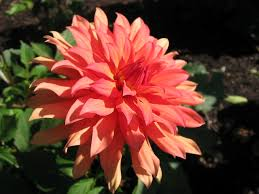

DÁLIA

O que é?
A Dália é uma planta tuberosa nativa das montanhas do México, famosa por sua diversidade impressionante de formas e cores. Suas flores podem variar de pequenos botões a pétalas gigantes que lembram fogos de artifício. Ela simboliza a força, o compromisso e a dignidade, sendo a flor nacional de seu país de origem.
Como cuidar?
As dálias são plantas generosas que florescem intensamente se bem cuidadas:
- Luz: Elas precisam de sol pleno (mínimo de 6 horas diárias). Sem sol suficiente, as hastes ficam fracas e a floração diminui.
- Solo: Deve ser rico em matéria orgânica e muito bem drenado. Elas não gostam de "pés molhados", o que pode apodrecer os tubérculos.
- Rega: Regue profundamente 2 a 3 vezes por semana, aumentando a frequência em climas muito secos.
- Poda: Remover as flores murchas (deadheading) é essencial para que a planta continue produzindo novos botões até o final da temporada.
Curiosidades
- Alimento Asteca: Antes de serem flores ornamentais, os astecas cultivavam as dálias como fonte de alimento por causa de seus tubérculos comestíveis.
- Geometria Sagrada: Algumas variedades, como as dálias "Pompon", possuem uma estrutura tão perfeitamente organizada que parecem cálculos matemáticos.
- Infinidade de Cores: Existem dálias de praticamente todas as cores, exceto azul puro.
- Crescimento Rápido: Em apenas uma estação, uma dália pode crescer de um pequeno tubérculo para uma planta de mais de um metro de altura cheia de flores.